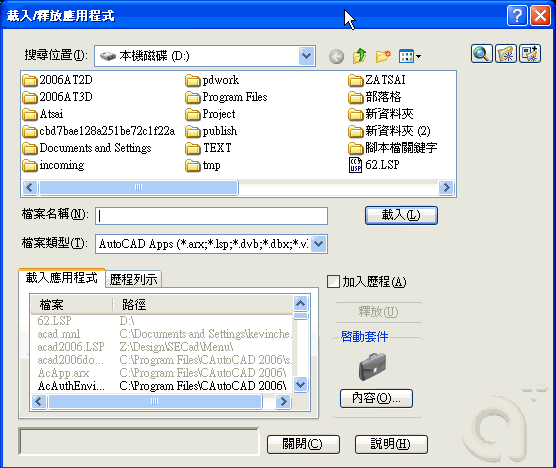
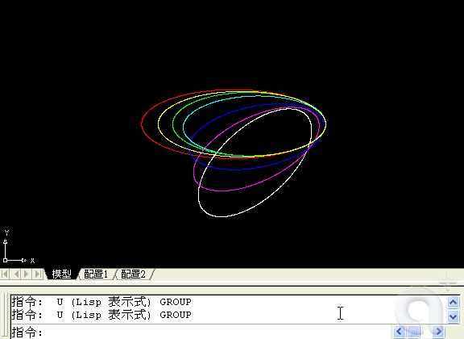

當收到 LISP 檔案時要如何掛入 AutoCAD 系統，以下使用「工具」功能表：「載入應用程式」appload 指令，並透過「啟動套件」中加入 LISP 程式檔案。以後每次啟動 AutoCAD 時都會載入 LISP 程式。
(DEFUN C:TEST () (COMMAND "ZOOM" "E") (SETQ A1 (GETVAR "EXTMIN") A3 (GETVAR "EXTMAX") ) (COMMAND "RECTANG" A1 A3) (PRINC) )
c:\Program Files\AutoCAD 2006\support 底下。
